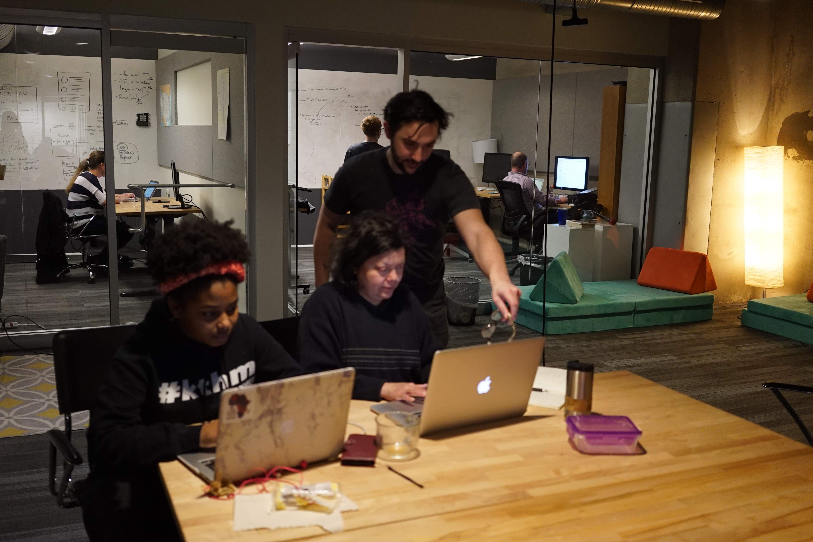

YourCarbonFootPrint
What the project is about:
Data has always fascinated me both as a journalist and as a developer. What is the best way to convey a message using data so that it has the desired impact? I used to do it with words, now with code. It has been effective, but I wanted it to be more effective. So I opted for data visualization,or just 'viz' as it is called.
How I did it
A senior developer Robert Horvick very kindly steered me in the direction of the free data visualization software, Tableau. And here it is, the first viz I've ever built, that shows you CO2 emmissions per capita of every country in the world based on data from the World Bank.
Hover over the dots, you get the country's name and per capita. Click on each dot and you see its line graph over the the years.
See the visualization
As we can see, Qatar currently has the highest emmissions per capita, possibly because it is such a small country with a high population density. It's carbon emissions though, are on its way down. Greenland has been almost steady, Norway is cutting its carbon footprint, so is the US. But other countries, particularly the Third World, are all increasing their carbon footprint, even if it is a small amount when compared to their per capita. It is a warning that the world has to watch out for.
Some more vizs on climate change and its impact on human life include these on extreme floods and how they have impacted countries across the world:
Floods over the yearsCountries affected
[Data from the Dartmouth Flood Observatory.]
Here is another data viz on the number of AIDS orphans in the world. South Africa and India have the most number of these, in the last decade.
Map and bar chart of countries
World bar chart over the years
[Data from USAID]
[All vizs built with Tableau.]
StoreNearMe
What the project is about:
It started as a code challenge issued by a company to me and turned into a completely fascinating side-project that is still growing wings. I had to figure out which was the nearest store to any address given in the US. All I had was a long list of [1,791]store addresses and geographical locations.
The Team
This is a solo side project of mine

How I did it
I wrote the entire backend code in Python first, by accessing the address inputed through the command line (using argparse). I used the Geocoder Open Street Map to get the geographical codes (latitude and longitude) of the address location.
Then I researched how to find out the distance between two locations on earth, did some segues like the Manhattan formula, but finally found consensus among academics that the Haversine formula -- a complex bit of trignometry that uses the earth's radius as a measure -- was the best way to do this. I found the code for this also, online from this website and used it will full gratitude for the world of open source! Here is the code I used:
def distance_between_points(latitude1, longitude1, latitude2, longitude2):
"""calculate distance based on the radius of the earth and trignometry"""
# Computed using the Haversine formula
# https://en.wikipedia.org/wiki/Haversine_formula
# translated from https://www.geodatasource.com/developers/javascript
if latitude1 == latitude2 and longitude1 == longitude2:
return 0
rad_latitude1 = math.pi * latitude1/180
rad_latitude2 = math.pi * latitude2/180
theta = longitude1 - longitude2
rad_theta = math.pi * theta/180
dist = math.sin(rad_latitude1) * math.sin(rad_latitude2) +\
math.cos(rad_latitude1) * math.cos(rad_latitude2) * math.cos(rad_theta)
if dist > 1:
dist = 1
dist = math.acos(dist)
dist = dist * 180/math.pi
dist = dist * 60 * 1.1515
return dist
After all that math, I wrote a for-loop that went through the stores data that I had and find the store with the shortest distance to the input address.
def nearest(latitude, longitude, store_locations):
"""Find the nearest store using latitute, longitude and the store_locations given in the file"""
nearest = None
distance = sys.maxsize
latitude = float(latitude)
longitude = float(longitude)
for location in store_locations:
loc_latitude = float(location["Latitude"])
loc_longitude = float(location["Longitude"])
dist = distance_between_points(
latitude, longitude, loc_latitude, loc_longitude)
if dist < distance:
distance = dist
nearest = location
return (nearest, distance)
Once the backend was built, I wanted to see if I could build a frontend with Leaflet.js which I wanted to learn. I thought it might be easier to do the backend with jQuery rather than Python and integrate the two quickly. I 'translated' the Python code to jQuery, used a different API -- Nominatim Open Street Map to access the geographical coordinates of the inputted address. All the rest of the code was the same, except written with jQuery. Here is the main code which updates the Leaflet map and marker and shows the nearest store:
//use the address geographical coordinates and the coordinates found in the parsed json file to calculate which is the store nearest to that address. Set the map to the address location and the marker to the store location
function findNearest(addLat, addLong, storeArr) {
let distance = null;
let nearest = null;
let latLong = [];
storeArr.forEach((location) => {
let storeLat = (location['Latitude'])
storeLat = parseFloat(storeLat)
let storeLong = (location['Longitude'])
storeLong = parseFloat(storeLong)
let dist = getDistance(addLat, addLong, storeLat, storeLong)
dist = parseFloat(dist);
if (distance === null || dist < distance) {
distance = dist;
distance = parseFloat(distance)
nearest = location;
latLong = [storeLat, storeLong]
}
})
let addLatLong = [addLat, addLong]
initialLatLong = addLatLong
mylatLng = latLong
marker.setLatLng(mylatLng).update();
let storeadd = '';
$.each(nearest, function(key, value) {
storeadd += ' ' + key + ' ' + value;
});
marker.setPopupContent(storeadd);
$("#storeadd").val("Distance: " + distance + " miles")
mymap.setView(mylatLng, 15).update();
console.log(storeadd)
// return {
// addLatLong: addLatLong,
// location: nearest, distance: distance, latLong: latLong
// }
}
I also built a map of all the stores in the US with their addresses showing when markers are clicked, using Folium and Python. This is another of the MapWithMe projects listed below. Click here to see the full map: Map of all stores
Full Code [JavaScript] Full Code [Python]
MapWithMe
What the project is about:
I have long been fascinated with geographical representation of data. I was researching how to this and came across the fantastic Folium ,a Python wrapper that combines the ease of Python with the power of the Leaflet.js library to make a great job of showing data on a map. I used it to make a map representation of the unemployment rates in various US states.
See MapHow I did it:
I began by learning the ropes with the help of this great tutorial by Brad Traversy . I used the pandas library to read the data from the csv files. With the use of Folium that automatially links Leaflet.js , the code for this map is extremely simple:
#create legend bins
bins = list(state_data['Unemployment'].quantile([0, 0.25, 0.5, 0.75, 1]))
# create map object
m = folium.Map([48, -102], zoom_start=3)
folium.Choropleth(
geo_data=states,
name='choropleth',
data=state_data,
columns=['State', 'Unemployment'],
key_on='feature.id',
fill_color='BuPu',
fill_opacity=0.7,
line_opacity=0.2,
legend_name="Unemployment Rate %",
bins=bins,
reset=True
).add_to(m)
m.save('map2.html')
I have made other simple maps also and played around with the custom marker features of Folium. Do check out the full code for more.
Full CodegetJustice

What the project is about:
Very often, when you are scrolling through your social media page, you come across some instance of injustice that you feel very strongly about. Till now, all you have been able to do is retweet, comment or share the instance. You have not been able to do anything concrete to get action on it or get the authorites to address the problem. We, the team -- Tiana Horn, David Sedgwick and I -- came up with this solution to get action against injustice, as our final project at our 12-week bootcamp at Momentum in Durham.
The Team


The demo of the getJustice app
We presented the getJustice app at the Full Frame Theatre in the American Underground on January 25, 2019 to an august audience of top techies and CEOs. Technologies used in the project were: Chrome Extension, JavaScript and jQuery, Python, Django, Bootstrap, external SMTP server, Github, Heroku, Agile. Read More
-

Clinton introducing our project on Demo Day -

Presenting our project -

Talking about design -

Some lighter moments too
What we have done:
We have set up a web app getJustice where you can download our Chrome extension with the click of a button. After that, any time you see an instance of injustice on a webpage and want to report it to the police, civic authorities or civil rights groups, you can just click on our extension. It takes a screenshot and attaches it to an email form. You can choose what kind of injustice it is -- a civil rights violation, a hate crime or police brutality -- and click to send it, within 30 seconds of your time. The form goes to all the concerned authorities as a report along with your screenshot. If you wish to, you can add details in the message to be sent. You can login and add your name to the report. Your email will automatically be registered and the authorities can reply to you. Or, you can choose to remain anonymous, and the report will still go to the authorities.You can also send the report directly from our webpage itself, where you can add an image or screenshot if you want to.
Here is the video of the presentation of our app
How we did it:

We learnt how to set up a Chrome extension first. Here is a bit of the code we used, which is essentially JavaScript. We created a manifest.json file and a background.js file. Then we put in this code to get the screenshot:
chrome.browserAction.onClicked.addListener(function (tab) {
chrome.tabs.captureVisibleTab({ format: "png" }, function (dataUrl) {
console.log(dataUrl)
chrome.tabs.create({ url: "https://getjustice.herokuapp.com/ext-report/" }, function (tab) {
chrome.tabs.executeScript(tab.id, {
code: `
let input = document.getElementById("new-screenshot")
input.src = '${dataUrl}'
let imgData = document.getElementById("screenshot-data")
imgData.setAttribute("value", "${dataUrl}")
`
})
})
})
});
We used JavaScript to pre-fill a form built with Django, with email addresses of the concerned authorities, along with a basic text (which you can edit). The screenshot taken by our extension is already attached to this form, but you also have the option to remove it, for privacy or other concerns. Finally we used Django's email facility to send the mail out through an external SMTP server on Heroku. In the process, we learnt all the ways emails can be compromised and how to put security fixes in place. We also had to figure out how to convert the screenshot, which was a dataUrl into a png image and send it. Here is the Python code for that:
def screenshot_decoder(dataUrl):
ext, image_data = dataUrl.split(";base64,")
binary_pad = (3-(len(image_data) % 3)) * "="
png = base64.b64decode(image_data + binary_pad)
return png
Full
Code
Snip^pet
What the project is about:
Often, we wish there was a website exclusively to list easily reuseable code snippets for our applications. Our team -- Crystal Ramirez , David Sedgwick , Deanna Jacobs and I -- thought it would be really useful to set up such a website, where code can be shared, copied, edited and reposted. We also wanted users to easily access a list of code snippets under their own account page for quick reuse and for polishing. Our solution: Snip^pet.
The Team


What we did:
We used Python, Django and Javascript, including several third party libraries to work this project out. We started off with building a Django app with models and a PostgreSQL database. We used the Djago REST API to feed in the information to our webpage. We essentially had just one page, with a tab to take the users to their personal page of snippets. We used JavaScript and jQuery to connect the API with the page, making Ajax calls to ensure that the page load time is not high. On the frontend, we used Bootstrap, Bulma and vanilla CSS to design the page and worked extensively with modals. We also used Django Gravatar and template tags to create images to represent our users.
How we did it:
We used the Mimesis library to create fake user data for development purposes. To create code snippets, we used individual files of each type of code. For development, we limited the code languages to Python, JavaScript, Ruby and Java. For each of these languages, we created individual code files that were called randomly on the webpage.
We used Django's full text postgres search as our search engine. So any word that was typed into the search box was matched with results. Here is the code we used for that in api.views.py:
from django.contrib.postgres.search import SearchQuery, SearchRank, SearchVector
class SnippetListCreateView(generics.ListCreateAPIView):
serializer_class = SnippetSerializer
filter_backends = (DjangoFilterBackend,)
queryset: Snippet.objects.all().order_by("-created_at")
def get_queryset(self):
vector = SearchVector('language', 'content',
'title', 'author__username')
if self.request.GET.get("search"):
query = self.request.GET.get("search")
return Snippet.objects.annotate(search=vector).filter(search=query)
else:
return Snippet.objects.filter(is_copy=True)
We used clipboard.js to ensure that users can 'snip a copy' of the code on our site. We used highlight.js to ensure that the different code sytax according to each language is retained on the site. Here is the JavaScript code we used to edit and delete snippets.
$.get("/api/my_snippets/").then(function (snippets) {
for (let snippet of snippets) {
$('#user-snips').append(profileHtml(snippet))
}
$(".edit-snippet-button").on('click', function (event) {
let data = $(event.target).parent().data();
$("#edit-snippet-title").val(data.title);
$("#edit-snippet-pk").val(data.pk);
$("#edit-snippet-language").val(data.language);
$("#edit-snippet-content").val(data.content);
$("#edit-snippet-modal").addClass('is-active')
})
$(".delete-snippet-button").on('click', function (event) {
let data = $(event.target).parent().data();
$.ajax({
url: "/api/snippets/" + data.pk + "/",
method: 'DELETE',
contentType: 'application/json',
beforeSend: function (xhr) {
xhr.setRequestHeader('X-CSRFToken', csrftoken)
},
}).then(function () {
let card = $(`.card-body[data-pk="${data.pk}"]`);
card.remove();
})
});
})
Full code
Sing Along
What the project is about:
I wanted to combine the old effect of the radio and the modern need of being given a choice on what to listen to. I wanted to let listeners decide whose songs they wanted to hear or opt for their favorite song/album using just the click of a button on a webpage. This app is the result.
The Team
This is a solo side project of mine
How I did it
I first did it with JavaScript and jQuery, researched the iTunes API and programmed Ajax to work with the HTML5 radio buttons. I designed the page using just vanilla CSS and HTML5.
Here is a screenshot of the old webpage:

Figuring out how to get the radio buttons to play the tunes and how to set up a search bar were the toughest parts of the project. Here is some of the code I used to get the radio buttons to play the music:
document.getElementById('musicbox').addEventListener("click", function (event) {
let dataUrl = $(event.target).parents("div")[0].dataset["url"];
if (dataUrl) {
event.preventDefault()
document.getElementById('play').src = dataUrl;
document.getElementById('play').play()
}
})
Project redesign
As I learnt React JS however, I felt the project would be much better if I did it in this framework. So I did a full redesign in React JS. Here is some of the code I used:
searchHandler = (evt) => {
this.searchQuery(evt.target.value);
}
searchQuery = (query) => {
const queryUrl = 'https://itunes.apple.com/search?media=music&limit=20&term=' + query;
jsonp(queryUrl, null, (err, data) => {
if (err) {
return Sorry something went wrong! Please try something else;
} else {
this.setState({ songs: data.results });
}
});
}
selectSong = (song) => {
this.setState({ playSong: song });
}
hearSong = () => {
if (this.state.playSong) {
return (
Full Code
Tracer
What the project is about:
How are maps plotted? By using elevations and depths. How does one find a path through the mountians? Well, obviously, one takes the lowest elevation and goes. Yes, true. But how to get the computer to figure out which is the lowest elevation and take that path? That was the challenge that I faced, by developing a Python program for the app, the Tracer.
The Team
This was a solo project
What I did
I was given a ginormous list of elevations as a text file, like this:
4713 4710 4701 4696 4688 4683 4668 4658 4655 4648 4646 4645 4671 4696
4706 4705 4704 4701 4696 4700 4697 4673 4636 4591 4559 4600 4648 4705
4776 4825 4862 4897 4904 4893 4885 4886 4886 4869 4845 4831 4836 4824
4812 4788 4762 4739 4724 4720 4719 4718 4722 4725 4726 4717 4699 4675
4651 4624 4604 4576 4573 4585 4602 4613 4639 4668 4693 4712 4721 4735
4744 4755 4756 4759 4757 4752 4752 4757 4765 4769 4783 4794 4812 4831
4846 4861 4879 4891 4904 4917 4902 4901 4886 4875 4868 4854 4848 4844
4854 4864 4869 4889 4905 4911 4924 4914 4903 4892 4873 4851 4858 4877
4888 4908 4920 4925 4938 4955 4967 4971 4984 4985 4989 4991 4988 4991
4988 4977 4966 4942 4916 4888 4872 4854 4839 4819 4817 4793 4772 4791
4792 4770 4759 4777 4802 4825 4853 4885 4903 4905 4933 4960 4989 5012
5000 4988 4968 4938 4920 4889 4872 4854 4834 4822 4809 4792 4780 4797
(truncated)
How I did it
-
How to plot the tracer path

I evidently needed to use the same put pixel method to plot the path also, so I gave it a different color, this time red. I figured out the formula to get the pixel to go forward: x+1, with y equal to 0. The options were: to go to the row above (x+1, y+1), to go to the row below, (x+1, y-1). The path was the one of the three with the lowest elevation. There was a problem when the path was either at the top of the image or at the bottom, as one of the rows (either up or down) was not an option, as it went out of the map. I ended up importing sys and using infinity to ensure the path did not go out.
Full Code